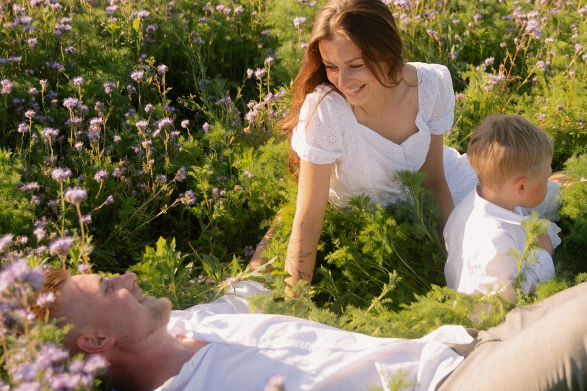

co si vzít na sebe na rodinné focení
Oblečení umí fotky krásně podtrhnout, nebo z nich naopak udělat pestrobarevný chaos. Tady je, jak ho vybírám se svými rodinami, aby se vám v něm dobře hýbalo a fotky vypadaly nadčasově i za dvacet let.
- barvy, které fungují
- vzory a nápisy
- sladit, ale nestejnokroj
- děti a pohodlí
- boty a doplňky
- časté otázky
barvy, které fungují
Nejlíp na fotkách vypadají tlumené, přírodní barvy: béžová, krémová, olivová, rezavá, prachově modrá. Ladí s přírodou i s interiérem a neodvádí pozornost od vašich tváří.
Čistě bílou a černou klidně použij, jen ať netvoří celou rodinu. Neonové barvy prosím vynech, odráží se na kůži a barví obličeje.

vzory a nápisy
Drobný vzor je v pořádku, velká loga a nápisy ne. Na fotce přitáhnou oko dřív než úsměv.

sladit, ale nestejnokroj
Nemusíte mít všichni stejné tričko. Stačí, když si barvy povídají. Mamka v rezavých šatech, taťka v krémové košili a děti v olivové. Když si nebudeš jistá, pošli mi fotky oblečení a vybereme spolu.


děti a pohodlí
Děti musí v oblečení běhat, válet se v trávě a lézt tátovi na ramena. Když je něco škrábe, poznáš to na fotkách hned.
časté otázky
Můžu si vzít víc outfitů?
Jasně. U delšího focení se klidně převlečte, ideální jsou dva.
Pomůžeš mi s výběrem?
Ráda. Pošli mi fotky oblečení a vybereme spolu.
Co když je zima?
Vrstvy, svetry a kabáty jsou na fotkách krásné. Jen si vezmi něco teplého na přesuny.
Musíme být všichni sladění?
Nemusíte. Stačí, když se barvy nebijí. Klidně ať má každý trochu jiný odstín.
Co obout dětem?
Pohodlné boty, ve kterých zvládnou běhat. Na louce klidně i naboso.

ahoj, jsem sofi
Fotím svatby, rodiny a značky v Brně a Bratislavě. Mám ráda přirozené momenty, jemné barvy a lidi, kteří se nebojí být sami sebou.
napiš miportfolio rodinceníkmohlo by tě zajímat
Další rady, které se ti před focením hodí, a jedna svatba pro inspiraci.
 rady před focením
rady před focenímjak se připravit na předsvatební focení

rady před focenímco si vzít na sebe na rodinné focení
 svatby
svatby